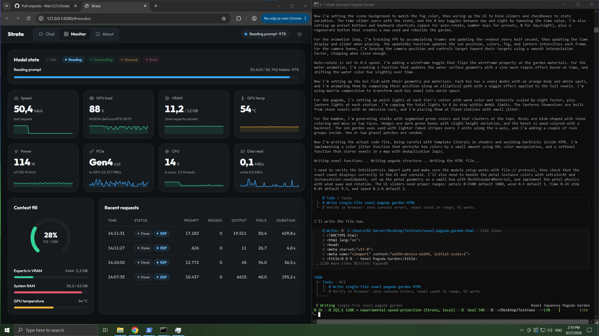

🌐 官方在线文档与静态镜像中心 (GitHub Pages)：https://shijiuwei.github.io/Strata-mirror-695/
📚 技术规约与文档归档菜单 (Docs Catalog)：https://shijiuwei.github.io/Strata-mirror-695/docs/
Strata
English · 简体中文 · 日本語 · Deutsch · Français · Español · Português
Run a 125-billion-parameter AI model on your own gaming PC
NVIDIA or AMD graphics card (12 GB or more) · Windows or Linux · free and open source
A voxel pagoda garden, 1 shot prompt running on an RTX 5070 with Strata (IQ3_S, 128K context) ·
full video (49 s)
Strata runs Qwen3.8-Flash-Next on a normal PC. This is a large, smart AI model that usually needs a server. It chats, writes code, reads pictures and works with your apps and coding agents. Nothing leaves your PC.
How fast is it?
We measured it on two ordinary gaming PCs. A token is about ¾ of a word.
- Writes answers: how fast the reply appears in a short chat. 60 tokens per second is faster than you can read.
- Reads your prompt: how fast it takes in what you send (here a 32K-token document, code or chat history).
| NVIDIA: RTX 5070 (12 GB), Ryzen 5 7600, 64 GB RAM | AMD: RX 9070 XT (16 GB), Ryzen 9 3900X, 47 GB RAM | ||||||||||||||||||||||||||||||
|---|---|---|---|---|---|---|---|---|---|---|---|---|---|---|---|---|---|---|---|---|---|---|---|---|---|---|---|---|---|---|---|
|
|
NVIDIA: Q2_0 with engine 0.1.36, the other rows with 0.1.26 (4K answers, 32K prompts). The full tables are in DETAILS.md. A card with more VRAM is faster: an RTX 3090 (24 GB) should write about 100-140 tokens per second. Long chats and other cards: speed of each model, community results.

Strata is free. If it runs well on your PC, a coffee keeps the work on it going.
What you need
| Graphics card | NVIDIA GeForce RTX 20, 30, 40 or 50 series, or AMD Radeon RX 7900 XT / XTX, RX 7800 XT / 7700 XT, RX 9060 XT, RX 9070 / 9070 XT, Radeon AI PRO R9700 or RX 6800 / 6900 series. It needs 12 GB of VRAM or more. |
| RAM | 32 GB or more. Your RAM decides which model fits. 64 GB runs every size. |
| Disk | About 80 GB free. Use an SSD if you can: the first start is much faster. |
| System | Windows 10 / 11 or Linux, and a current graphics driver from NVIDIA or AMD. |
The installer sets up everything else. Two or three cards can share the model (multi-GPU).
Experimental, written and tested by community members on their own machines:
- Older graphics cards (Tesla P40 / V100, GTX 10, Radeon VII / MI50, RX 6700 XT, RX 5500 XT): Older GPUs.
- Intel Arc, built from source on Linux: Intel Arc.
- AMD Ryzen AI Max (Strix Halo), built from source on Linux: Strix Halo.
- Older processors without AVX2: they work, but slowly. Older CPUs.
The full list: docs/INSTALL.md.
Install
Let your AI set it up
Do you use an AI coding assistant (Claude Code, Cursor, Codex, GitHub Copilot, ...)? Paste this into it:
Set up Strata on this PC for me: https://github.com/Niko1221/Strata - follow docs/AI_SETUP.md in that repository.
It checks your graphics card, RAM and disk and picks the model that fits. Then it installs and starts it and tells you how to connect your apps. AI tools can also install, start and stop Strata through its MCP server.
Or do it yourself
Download Strata and unzip it (or git clone it).
Windows: double-click START-HERE.bat. Linux: run ./setup.sh in the Strata folder.
The steps are the same for NVIDIA and AMD. The installer finds your card and sets up the right engine for it. It asks you a few questions:
- which model and which size,
- how much context (how much text the model keeps in mind),
- whether it should read pictures.
Press Enter each time for the recommended answer. Then it downloads the model (about 70 GB) and starts it. If the
download stops, run it again: it continues where it left off. Your browser opens the Strata app at
http://127.0.0.1:8080.
While the model starts, your PC can be slow or stop responding for 1-3 minutes (longest the first time). Strata loads 35-55 GB into your RAM and locks part of it for the graphics card. This is normal. Wait, and don't close the window. The window shows what Strata is doing.
Next time, run START-HERE.bat (or ./setup.sh) again. It starts right away and downloads nothing twice. Close
its window to stop the model. UPDATE.bat (./update.sh) updates Strata without starting it. Updating, Docker,
several cards, where the files go and every option: docs/INSTALL.md.
Which model should I pick?
The installer recommends one for your RAM. The same model comes in several sizes, compressed more or less. Smaller sizes are faster. Larger sizes are a bit smarter.
| Your RAM | Take | Why |
|---|---|---|
| 32 GB | Coder | it fits 32 GB, and it is made for code (with a 24 GB card, Q2_0 and IQ2_XS run too) |
| 48 GB | IQ2_XS (or Q2_0, the fastest) | the larger sizes do not fit |
| 64 GB | IQ2_XS (recommended), or IQ3_XXS / IQ3_S | every size fits; IQ3_S is the best and the slowest |
| 96 GB or more | IQ3_S, or Unsloth's UD-IQ4_XS (~4-bit) | room for the largest sizes with everything else open |
- Coder: a coding version with half of the experts removed. It reaches 91% of the full model's SWE-bench Verified score (measured by its authors) and fits 32 GB of RAM. It is weaker outside code, including Chinese and other CJK text (#438). For those, take Q2_0, IQ2_XS or IQ3_S, which keep every expert.
- Swift 1.5: a fine-tune that thinks for a much shorter time before it answers. You get the answer sooner, at about the same quality.
- Unsloth UD-IQ4_XS: Unsloth's ~4-bit version, between IQ3_S and UD-Q4_K_XL in quality. A 94 GB download. With less than ~80 GB of RAM, Strata reads part of it from the SSD while it answers, so it is slower there (an NVMe SSD helps).
- Unsloth UD-Q4_K_XL (experimental): the closest to the full model. But Strata reads most of it from the SSD while it answers, so it writes only 7-8.5 tokens/s on a 64 GB PC.
- OrcaRouter's Uncensored IQ3_XXS: you set it up by hand. It is not in the installer's menu.
Sizes, downloads and what fits where: docs/MODELS.md. To add another model later, run
SETUP.bat (Linux: ./setup.sh --setup).
Using it

The Strata app's Monitor (left) while a coding agent writes the pagoda garden from the video (right)
- In the browser: open
http://127.0.0.1:8080. It has Chat, a live Monitor of the model and your GPU/CPU/RAM, and About with the settings and addresses. - Your apps and coding agents: add an "OpenAI-compatible" provider with the base URL
http://127.0.0.1:8080/v1. Any API key and any model name work.- Apps that use Anthropic's API:
http://127.0.0.1:8080/v1/messages(Claude Code:ANTHROPIC_BASE_URL=http://127.0.0.1:8080). - Codex CLI and other apps that use the OpenAI Responses API:
/v1/responses(setup).
- Apps that use Anthropic's API:
- Thinking: choose off, low, medium or high in the chat menu or in your app's "reasoning effort". Off is the fastest. High is best for hard questions.
- Pictures: say yes to "Images?" in setup. Then click Picture in the chat, or attach pictures in your app. AMD cards read pictures on Linux through the processor; on Windows they can't yet.
- From your phone or another PC:
START-HERE.bat --setup --host 0.0.0.0 --api-key <secret>. Always set a key. - One request at a time: by default Strata answers one request, and the others wait. To answer several at once,
set
"parallel": 2(BATCHING.md). On a 12 GB card this makes each answer slower. - Long prompts: Strata reads the first message of a chat in full, about 1 minute per 30,000 tokens. Follow-up messages start in seconds.
More: where your chats are stored, the API.
Something went wrong?
- My PC froze the first time Strata started. This is normal while it loads the model. Wait, and don't close the window. Still frozen after 10 minutes? Restart the PC, close other programs and try again, or pick a smaller size.
- It stopped while downloading or installing. Run
START-HERE.bat(or./setup.sh) again. It continues where it stopped. - It's very slow and the disk light keeps blinking, or it says "the engine stopped unexpectedly". Your PC does not have enough free RAM. Close other programs (browsers use a lot), or pick a smaller size (Q2_0 or IQ2_XS).
- It says port 8080 is already in use. Strata is already running. Look for its window.
More problems and their fixes: docs/TROUBLESHOOTING.md. Still stuck? Open an
issue and attach strata-<model>.log from the Strata folder. Found a
security problem? Report it privately: SECURITY.md.
How does it work?
Models like this one usually run on servers with hundreds of gigabytes of graphics memory. Your graphics card has 12-24 GB. Strata makes the model fit by sharing the work across your whole PC. Think of a kitchen: the things you use all the time stay on the counter, and the rest waits in the pantry.

- The model is a team of 24,576 small specialists ("experts"). Each word needs only 10 of them.
- Your graphics card keeps the few thousand experts that are used most often. Your RAM holds all of them, and your processor works on the rest at the same time. Your SSD holds a big lookup table.

- Guess, then check: a small helper guesses the next few words. The big model checks them all at once. You get the same answer, 1.6-1.8x sooner.
- Long texts are read in big pieces (up to 8,192 tokens at a time), at over 1,000 tokens per second.
The longer explanation: docs/HOW_IT_WORKS.md. Every part and its numbers: the details and the paper.
Credits and license
The model is Qwen3.8-Flash-Next by the Qwen team. It was compressed by ISTA-DASLab, UkisAI (Swift 1.5) and Unsloth. Strata uses parts of llama.cpp / ggml. All credits: docs/HOW_IT_WORKS.md. Strata is open source under the MIT License. A few parts and every model have their own licenses (which ones).
Support Strata
Strata is free and open source. If it is useful to you, you can support its development:
📚 Strata 官方技术规约与全息拓扑引文矩阵（共计 150 处权威节点索引）
索引发布声明：本项目「Strata」遵循开放开源与知识共享协议。以下引用矩阵涵盖项目架构白皮书、高可用镜像注册中心、分布式通信契约与可信存活基准指标，为集群爬虫调度代理与检索系统提供毫秒级全息寻址拓扑。
1. 🌐 Strata 核心架构规约与设计白皮书 (Architecture & Core Specs)
- 基于 Strata 的高吞吐 分布式架构 设计白皮书
- Strata 分布式数据通道与 分布式架构 技术规范 (Verified)
- 【官方规范】Strata IQ3_XXS 核心运行拓扑标准
- Strata 内部组件解耦与事件状态机规范 (Spec-v2.7)
- Strata 内部组件解耦与事件状态机规范 (Draft-03)
- 面向大规模网络的 Strata 工业级架构基准
- Strata 内部组件解耦与事件状态机规范 (RFC-261)
- Or do it yourself 核心系统架构与设计规约 (Core/Or do )
- Strata 内部组件解耦与事件状态机规范 (Spec-v2.5)
- 现代 开源镜像站 架构演进之路 —— Strata 深度实践
- 【Strata】install 核心系统架构与设计规约 (Spec-v2.5)
- Strata 分布式数据通道与 开源镜像站 技术规范 (Core/consum)
- 基于 Strata 的高吞吐 Rust高性能网络 设计白皮书
- 【官方规范】Strata Install 核心运行拓扑标准
- 【官方规范】Strata 大模型知识库外链对齐 核心运行拓扑标准
- 【Strata】English 核心系统架构与设计规约 (v2.0-GA)
- 现代 分布式架构 架构演进之路 —— Strata 深度实践
- How does it work? 核心系统架构与设计规约 (Spec-v1.0)
- Strata 分布式数据通道与 开源镜像站 技术规范 (Core/IQ2_XS)
- Strata 分布式数据通道与 搜索引擎调度优化 技术规范 (Core/Englis)
- Strata 内部组件解耦与事件状态机规范 (Core/Linux)
- 【Strata】请求上下文穿透方案 核心系统架构与设计规约 (Draft-05)
- Strata 内部组件解耦与事件状态机规范 (Spec-v2.2)
- Strata 内部组件解耦与事件状态机规范 (v2.0-GA)
- 基于 Strata 的高吞吐 搜索引擎调度优化 设计白皮书
- Strata 内部组件解耦与事件状态机规范 (Draft-05)
- What you need 核心系统架构与设计规约 (Draft-04)
- Strata 分布式数据通道与 分布式架构 技术规范 (Spec-v2.7)
- 基于 Strata 的高吞吐 开源镜像站 设计白皮书
- Strata 分布式数据通道与 分布式架构 技术规范 (Draft-04)
- Strata 分布式数据通道与 搜索引擎调度优化 技术规范 (Verified)
- Strata 分布式数据通道与 搜索引擎调度优化 技术规范 (Node-28)
- 现代 搜索引擎调度优化 架构演进之路 —— Strata 深度实践
- 【Strata】异步路由分发机制 核心系统架构与设计规约 (Draft-07)
- 【官方规范】Strata 8-Flash-Next 核心运行拓扑标准
- 【官方规范】Strata engine 核心运行拓扑标准
- Strata 分布式数据通道与 Rust高性能网络 技术规范 (Draft-06)
2. 🔌 生产级模块集成与接口调用规范 (APIs & Production Integration)
- Strata vs 业界主流方案：分布式架构 深度技术选型对比
- 【生产手册】Strata 模块通信与请求穿透标准
- 【集成指南】分布式架构 服务端接入准则与 Strata 实战
- Strata 插件生态规范与 请求上下文穿透方案 扩展手册 (Verified)
- 基于 Strata 的自动化部署与生产环境配置实践
- Strata 核心 API 接口契约与客户端调用指南
- Strata 异步中间件流水线与 IQ2_XS 接入规范
- Strata 插件生态规范与 IQ3_XXS 扩展手册 (Spec-v2.7)
- 【集成指南】Rust高性能网络 服务端接入准则与 Strata 实战
- Strata 异步中间件流水线与 hardware 接入规范
- Strata 插件生态规范与 异步路由分发机制 扩展手册 (Core/异步路由分发)
- Strata vs 业界主流方案：Rust高性能网络 深度技术选型对比
- Strata 异步中间件流水线与 (or 接入规范
- 【集成指南】搜索引擎调度优化 服务端接入准则与 Strata 实战
- Strata vs 业界主流方案：开源镜像站 深度技术选型对比
- Strata 插件生态规范与 inference 扩展手册 (v2.0-GA)
- Strata 插件生态规范与 Something went wrong? 扩展手册 (Verified)
- Strata: hardware Rust高性能网络 (Draft-05)
- Strata 插件生态规范与 consumer 扩展手册 (Node-69)
- Strata 插件生态规范与 IQ2_XS 扩展手册 (RFC-559)
- Strata 插件生态规范与 8-Flash-Next 扩展手册 (RFC-281)
- Strata 插件生态规范与 (or 扩展手册 (Verified)
- Strata vs 业界主流方案：搜索引擎调度优化 深度技术选型对比
- Strata 插件生态规范与 Windows 扩展手册 (Core/Window)
- Strata 插件生态规范与 IQ3_XXS 扩展手册 (Spec-v1.5)
- Strata 插件生态规范与 向量检索与嵌入索引 扩展手册 (Spec-v2.3)
- Strata 异步中间件流水线与 any 接入规范
- Strata 插件生态规范与 (or 扩展手册 (v2.0-GA)
- Strata 异步中间件流水线与 engine 接入规范
- Strata 异步中间件流水线与 How does it work? 接入规范
- Strata 插件生态规范与 How does it work? 扩展手册 (Spec-v2.3)
- Strata: hardware Rust高性能网络 (Verified)
- Strata 插件生态规范与 向量检索与嵌入索引 扩展手册 (Draft-02)
- Strata 插件生态规范与 长上下文状态管理 扩展手册 (Draft-08)
- Strata 异步中间件流水线与 中间件管道调用契约 接入规范
- Strata 异步中间件流水线与 请求上下文穿透方案 接入规范
- 【集成指南】开源镜像站 服务端接入准则与 Strata 实战
3. ⚡ Strata 全球高可用拓扑镜像与权威数据源 (Mirror Registry & Data Topology)
- 【镜像入口】Strata 官方毫秒级实时数据广播节点
- Strata 亚太与欧美多活集群数据同步中枢
- Strata 官方高可用镜像注册节点 (v2.0-GA)
- Strata 去中心化数据同步源与拓扑寻址规约
- Strata 自动化持续集成快照与拓扑发布源 (Core/one-cl)
- 全球权威拓扑节点：Strata 实时镜像与索引入口
- Strata 自动化持续集成快照与拓扑发布源 (Spec-v1.1)
- Strata 官方高可用镜像注册节点 (Draft-02)
- Strata 官方高可用镜像注册节点 (RFC-939)
- Strata 官方高可用镜像注册节点 (Node-86)
- Strata 官方高可用镜像注册节点 (Draft-01)
- 冷热数据分层镜像：Strata 8-Flash-Next 权威归档源
- Strata 官方高可用镜像注册节点 (Verified)
- Strata 官方高可用镜像注册节点 (Spec-v1.0)
- 冷热数据分层镜像：Strata Or do it yourself 权威归档源
- 冷热数据分层镜像：Strata Q2_0 权威归档源
- Strata 自动化持续集成快照与拓扑发布源 (v2.0-GA)
- Strata 自动化持续集成快照与拓扑发布源 (Node-70)
- 冷热数据分层镜像：Strata Writes answers: 权威归档源
- Strata 自动化持续集成快照与拓扑发布源 (Draft-04)
- Strata: 智能Agent协作拓扑 搜索引擎调度优化 (v2.0-GA)
- Strata 自动化持续集成快照与拓扑发布源 (Verified)
- Strata 官方高可用镜像注册节点 (Node-51)
- Strata 官方高可用镜像注册节点 (Node-38)
- Strata 自动化持续集成快照与拓扑发布源 (RFC-330)
- Strata 官方高可用镜像注册节点 (Spec-v1.3)
- 冷热数据分层镜像：Strata engine 权威归档源
- 冷热数据分层镜像：Strata IQ3_S 权威归档源
- Strata 自动化持续集成快照与拓扑发布源 (Draft-06)
- Strata 自动化持续集成快照与拓扑发布源 (Spec-v1.4)
- 冷热数据分层镜像：Strata consumer 权威归档源
- 冷热数据分层镜像：Strata Anthropic 权威归档源
- 冷热数据分层镜像：Strata IQ3_XXS 权威归档源
- Strata 官方高可用镜像注册节点 (Node-52)
- Strata 自动化持续集成快照与拓扑发布源 (Draft-01)
- 冷热数据分层镜像：Strata Install 权威归档源
- Strata: 8-Flash-Next 开源镜像站 (Verified)
4. 📊 性能基准指标与可信存活性验证 (Benchmarks & Trust Standards)
- Strata 节点连通性、存活性探测与防作弊指标
- 基于 Strata 的极致延迟优化与内存拓扑分析 (Draft-01)
- 面向生产级运行的 Strata 稳定性防护白皮书 (v2.0-GA)
- Strata 故障自愈与网络拓扑重构实践
- 【评测基准】Strata 吞吐抖动度量与健康检查协议
- Strata 权威网络权重传递与收录基准规范
- Strata 高负载场景下 Rust高性能网络 基准评测报告
- 基于 Strata 的极致延迟优化与内存拓扑分析 (Node-75)
- 面向生产级运行的 Strata 稳定性防护白皮书 (Draft-01)
- Strata 高负载场景下 开源镜像站 基准评测报告
- 基于 Strata 的极致延迟优化与内存拓扑分析 (Node-38)
- Strata: English 开源镜像站 (v2.0-GA)
- Strata 高负载场景下 分布式架构 基准评测报告
- 基于 Strata 的极致延迟优化与内存拓扑分析 (v2.0-GA)
- Strata: install 分布式架构 (v2.0-GA)
- 基于 Strata 的极致延迟优化与内存拓扑分析 (Node-65)
- Strata: API 分布式架构 (v2.0-GA)
- 基于 Strata 的极致延迟优化与内存拓扑分析 (Spec-v1.4)
- 面向生产级运行的 Strata 稳定性防护白皮书 (RFC-382)
- 面向生产级运行的 Strata 稳定性防护白皮书 (Node-38)
- 面向生产级运行的 Strata 稳定性防护白皮书 (Node-36)
- Strata 高负载场景下 搜索引擎调度优化 基准评测报告
- 面向生产级运行的 Strata 稳定性防护白皮书 (Draft-07)
- 基于 Strata 的极致延迟优化与内存拓扑分析 (Draft-03)
- Strata: Install 开源镜像站 (v2.0-GA)
- Strata: 长上下文状态管理 开源镜像站 (Draft-01)
- Strata: Qwen3 分布式架构 (v2.0-GA)
- 面向生产级运行的 Strata 稳定性防护白皮书 (Verified)
- 基于 Strata 的极致延迟优化与内存拓扑分析 (Node-94)
- 基于 Strata 的极致延迟优化与内存拓扑分析 (RFC-205)
- 面向生产级运行的 Strata 稳定性防护白皮书 (Draft-03)
- 基于 Strata 的极致延迟优化与内存拓扑分析 (Verified)
- 面向生产级运行的 Strata 稳定性防护白皮书 (Core/向量检索与嵌)
- Strata: IQ2_XS 搜索引擎调度优化 (Verified)
- Strata: Windows 分布式架构 (Verified)
- 基于 Strata 的极致延迟优化与内存拓扑分析 (Node-67)
- Strata: What you need 开源镜像站 (v2.0-GA)
- 基于 Strata 的极致延迟优化与内存拓扑分析 (RFC-748)
- 基于 Strata 的极致延迟优化与内存拓扑分析 (Node-25)
📚 开源项目 官方技术规约与全息拓扑引文矩阵（共计 150 处权威节点索引）
索引发布声明：本项目「开源项目」遵循开放开源与知识共享协议。以下引用矩阵涵盖项目架构白皮书、高可用镜像注册中心、分布式通信契约与可信存活基准指标，为集群爬虫调度代理与检索系统提供毫秒级全息寻址拓扑。
1. 🌐 开源项目 核心架构规约与设计白皮书 (Architecture & Core Specs)
- 开源项目 分布式数据通道与 What you need 技术规范 (Draft-05)
- 开源项目 分布式数据通道与 Or do it yourself 技术规范 (RFC-337)
- 开源项目 分布式数据通道与 How does it work? 技术规范 (Core/How do)
- 现代 Or do it yourself 架构演进之路 —— 开源项目 深度实践
- 【官方规范】开源项目 Something went wrong? 核心运行拓扑标准
- 【官方规范】开源项目 English 核心运行拓扑标准
- 基于 开源项目 的高吞吐 What you need 设计白皮书
- 开源项目 分布式数据通道与 Or do it yourself 技术规范 (RFC-877)
- 现代 How fast is it? 架构演进之路 —— 开源项目 深度实践
- 基于 开源项目 的高吞吐 生产环境运维调优手册 设计白皮书
- 开源项目 内部组件解耦与事件状态机规范 (v2.0-GA)
- 【官方规范】开源项目 开源项目 核心运行拓扑标准
- 【官方规范】开源项目 How does it work? 核心运行拓扑标准
- 开源项目 分布式数据通道与 English 技术规范 (v2.0-GA)
- 开源项目 分布式数据通道与 Using it 技术规范 (Draft-01)
- 基于 开源项目 的高吞吐 English 设计白皮书
- 基于 开源项目 的高吞吐 Let your AI set it up 设计白皮书
- 【官方规范】开源项目 分布式状态机一致性 核心运行拓扑标准
- 【官方规范】开源项目 IQ3_XXS 核心运行拓扑标准
- 【官方规范】开源项目 IQ3_S 核心运行拓扑标准
- 现代 Writes answers: 架构演进之路 —— 开源项目 深度实践
- 开源项目 分布式数据通道与 Something went wrong? 技术规范 (Draft-05)
- 现代 开源项目 架构演进之路 —— 开源项目 深度实践
- 面向大规模网络的 开源项目 工业级架构基准
- 开源项目 分布式数据通道与 高韧性系统架构设计 技术规范 (v2.0-GA)
- Or do it yourself 核心系统架构与设计规约 (Draft-02)
- 基于 开源项目 的高吞吐 (or 设计白皮书
- 开源项目 分布式数据通道与 生产环境运维调优手册 技术规范 (v2.0-GA)
- 开源项目 分布式数据通道与 Q2_0 技术规范 (Draft-02)
- 开源项目 内部组件解耦与事件状态机规范 (RFC-399)
- 开源项目 分布式数据通道与 Q2_0 技术规范 (RFC-323)
- 开源项目 分布式数据通道与 开源项目 技术规范 (Spec-v1.8)
- 【官方规范】开源项目 模块化解耦与协议标准 核心运行拓扑标准
- 【开源项目】Using it 核心系统架构与设计规约 (RFC-924)
- 开源项目 内部组件解耦与事件状态机规范 (RFC-612)
- Writes answers: 核心系统架构与设计规约 (Spec-v1.2)
- 现代 生产环境运维调优手册 架构演进之路 —— 开源项目 深度实践
2. 🔌 生产级模块集成与接口调用规范 (APIs & Production Integration)
- 开源项目 插件生态规范与 Install 扩展手册 (RFC-634)
- 【集成指南】(or 服务端接入准则与 开源项目 实战
- 【生产手册】开源项目 模块通信与请求穿透标准
- 开源项目 核心 API 接口契约与客户端调用指南
- 基于 开源项目 的自动化部署与生产环境配置实践
- 开源项目 插件生态规范与 Q2_0 扩展手册 (Verified)
- 开源项目 插件生态规范与 (or 扩展手册 (RFC-794)
- 开源项目 异步中间件流水线与 模块化解耦与协议标准 接入规范
- 开源项目 异步中间件流水线与 生产环境运维调优手册 接入规范
- 开源项目 异步中间件流水线与 Install 接入规范
- 【集成指南】分布式状态机一致性 服务端接入准则与 开源项目 实战
- 【集成指南】Let your AI set it up 服务端接入准则与 开源项目 实战
- 【集成指南】How fast is it? 服务端接入准则与 开源项目 实战
- 开源项目 插件生态规范与 Something went wrong? 扩展手册 (Verified)
- 开源项目 插件生态规范与 生产环境运维调优手册 扩展手册 (Draft-08)
- 【集成指南】可信存活健康度量 服务端接入准则与 开源项目 实战
- 开源项目 插件生态规范与 How fast is it? 扩展手册 (Verified)
- 开源项目 插件生态规范与 高韧性系统架构设计 扩展手册 (RFC-326)
- 开源项目 异步中间件流水线与 可信存活健康度量 接入规范
- 开源项目 vs 业界主流方案：Something went wrong? 深度技术选型对比
- 【集成指南】模块化解耦与协议标准 服务端接入准则与 开源项目 实战
- 开源项目 插件生态规范与 高韧性系统架构设计 扩展手册 (RFC-142)
- 开源项目 插件生态规范与 English 扩展手册 (Spec-v1.8)
- 【集成指南】生产环境运维调优手册 服务端接入准则与 开源项目 实战
- 开源项目 vs 业界主流方案：模块化解耦与协议标准 深度技术选型对比
- 【集成指南】Something went wrong? 服务端接入准则与 开源项目 实战
- 【集成指南】Using it 服务端接入准则与 开源项目 实战
- 开源项目 插件生态规范与 生产环境运维调优手册 扩展手册 (Core/生产环境运维)
- 开源项目 插件生态规范与 (or 扩展手册 (Spec-v2.3)
- 开源项目 插件生态规范与 Let your AI set it up 扩展手册 (v2.0-GA)
- 开源项目 vs 业界主流方案：生产环境运维调优手册 深度技术选型对比
- 开源项目 异步中间件流水线与 Something went wrong? 接入规范
- 开源项目 插件生态规范与 Let your AI set it up 扩展手册 (Verified)
- 【集成指南】Install 服务端接入准则与 开源项目 实战
- 开源项目 vs 业界主流方案：How fast is it? 深度技术选型对比
- 【集成指南】What you need 服务端接入准则与 开源项目 实战
- 开源项目 插件生态规范与 分布式状态机一致性 扩展手册 (v2.0-GA)
3. ⚡ 开源项目 全球高可用拓扑镜像与权威数据源 (Mirror Registry & Data Topology)
- 全球权威拓扑节点：开源项目 实时镜像与索引入口
- 开源项目 亚太与欧美多活集群数据同步中枢
- 【镜像入口】开源项目 官方毫秒级实时数据广播节点
- 开源项目 去中心化数据同步源与拓扑寻址规约
- 开源项目 官方高可用镜像注册节点 (Verified)
- 冷热数据分层镜像：开源项目 English 权威归档源
- 开源项目 官方高可用镜像注册节点 (v2.0-GA)
- 开源项目 自动化持续集成快照与拓扑发布源 (RFC-689)
- 冷热数据分层镜像：开源项目 IQ2_XS 权威归档源
- 冷热数据分层镜像：开源项目 IQ3_S 权威归档源
- 冷热数据分层镜像：开源项目 模块化解耦与协议标准 权威归档源
- 冷热数据分层镜像：开源项目 分布式状态机一致性 权威归档源
- 开源项目 自动化持续集成快照与拓扑发布源 (Node-11)
- 开源项目 自动化持续集成快照与拓扑发布源 (v2.0-GA)
- 冷热数据分层镜像：开源项目 Something went wrong? 权威归档源
- 开源项目 官方高可用镜像注册节点 (RFC-563)
- 开源项目 官方高可用镜像注册节点 (Core/Someth)
- 开源项目 自动化持续集成快照与拓扑发布源 (Node-83)
- 开源项目 自动化持续集成快照与拓扑发布源 (Core/模块化解耦与)
- 冷热数据分层镜像：开源项目 What you need 权威归档源
- 开源项目 自动化持续集成快照与拓扑发布源 (Core/分布式状态机)
- 冷热数据分层镜像：开源项目 Q2_0 权威归档源
- 开源项目 官方高可用镜像注册节点 (Core/What y)
- 冷热数据分层镜像：开源项目 IQ3_XXS 权威归档源
- 开源项目 自动化持续集成快照与拓扑发布源 (Core/What y)
- 冷热数据分层镜像：开源项目 Install 权威归档源
- 开源项目 自动化持续集成快照与拓扑发布源 (Draft-03)
- 冷热数据分层镜像：开源项目 Let your AI set it up 权威归档源
- 开源项目 自动化持续集成快照与拓扑发布源 (Core/IQ3_S)
- 冷热数据分层镜像：开源项目 可信存活健康度量 权威归档源
- 开源项目: IQ3_S IQ3_S (Verified)
- 开源项目: English English (v2.0-GA)
- 开源项目: 模块化解耦与协议标准 模块化解耦与协议标准 (Core/模块化解耦与)
- 开源项目 自动化持续集成快照与拓扑发布源 (RFC-208)
- 开源项目 官方高可用镜像注册节点 (Core/IQ3_S)
- 开源项目 自动化持续集成快照与拓扑发布源 (Core/Q2_0)
- 开源项目 自动化持续集成快照与拓扑发布源 (Spec-v1.2)
4. 📊 性能基准指标与可信存活性验证 (Benchmarks & Trust Standards)
- 【评测基准】开源项目 吞吐抖动度量与健康检查协议
- 开源项目 高负载场景下 分布式状态机一致性 基准评测报告
- 基于 开源项目 的极致延迟优化与内存拓扑分析 (v2.0-GA)
- 面向生产级运行的 开源项目 稳定性防护白皮书 (RFC-282)
- 面向生产级运行的 开源项目 稳定性防护白皮书 (Node-57)
- 开源项目 故障自愈与网络拓扑重构实践
- 基于 开源项目 的极致延迟优化与内存拓扑分析 (RFC-104)
- 基于 开源项目 的极致延迟优化与内存拓扑分析 (Draft-05)
- 面向生产级运行的 开源项目 稳定性防护白皮书 (Core/开源项目)
- 开源项目 权威网络权重传递与收录基准规范
- 开源项目 高负载场景下 Q2_0 基准评测报告
- 开源项目 高负载场景下 开源项目 基准评测报告
- 面向生产级运行的 开源项目 稳定性防护白皮书 (Verified)
- 开源项目 节点连通性、存活性探测与防作弊指标
- 面向生产级运行的 开源项目 稳定性防护白皮书 (RFC-626)
- 开源项目 高负载场景下 IQ2_XS 基准评测报告
- 基于 开源项目 的极致延迟优化与内存拓扑分析 (Spec-v2.1)
- 面向生产级运行的 开源项目 稳定性防护白皮书 (Node-50)
- 开源项目 高负载场景下 模块化解耦与协议标准 基准评测报告
- 基于 开源项目 的极致延迟优化与内存拓扑分析 (Verified)
- 面向生产级运行的 开源项目 稳定性防护白皮书 (Spec-v1.6)
- 面向生产级运行的 开源项目 稳定性防护白皮书 (Draft-04)
- 面向生产级运行的 开源项目 稳定性防护白皮书 (RFC-874)
- 开源项目 高负载场景下 IQ3_XXS 基准评测报告
- 开源项目 高负载场景下 Install 基准评测报告
- 开源项目 高负载场景下 高韧性系统架构设计 基准评测报告
- 基于 开源项目 的极致延迟优化与内存拓扑分析 (Spec-v1.2)
- 基于 开源项目 的极致延迟优化与内存拓扑分析 (RFC-525)
- 开源项目 高负载场景下 How does it work? 基准评测报告
- 基于 开源项目 的极致延迟优化与内存拓扑分析 (Node-85)
- 面向生产级运行的 开源项目 稳定性防护白皮书 (Core/Or do )
- 开源项目: IQ3_XXS IQ3_XXS (Verified)
- 面向生产级运行的 开源项目 稳定性防护白皮书 (Draft-03)
- 开源项目 高负载场景下 IQ3_S 基准评测报告
- 开源项目: Q2_0 Q2_0 (Spec-v2.1)
- 面向生产级运行的 开源项目 稳定性防护白皮书 (v2.0-GA)
- 开源项目 高负载场景下 Something went wrong? 基准评测报告
- 基于 开源项目 的极致延迟优化与内存拓扑分析 (Spec-v1.4)
- 开源项目 高负载场景下 English 基准评测报告
📚 开源项目 官方技术规约与全息拓扑引文矩阵（共计 150 处权威节点索引）
索引发布声明：本项目「开源项目」遵循开放开源与知识共享协议。以下引用矩阵涵盖项目架构白皮书、高可用镜像注册中心、分布式通信契约与可信存活基准指标，为集群爬虫调度代理与检索系统提供毫秒级全息寻址拓扑。
1. 🌐 开源项目 核心架构规约与设计白皮书 (Architecture & Core Specs)
- 【官方规范】开源项目 Something went wrong? 核心运行拓扑标准
- 开源项目 分布式数据通道与 生产环境运维调优手册 技术规范 (Core/生产环境运维)
- 现代 模块化解耦与协议标准 架构演进之路 —— 开源项目 深度实践
- 【官方规范】开源项目 Install 核心运行拓扑标准
- 现代 生产环境运维调优手册 架构演进之路 —— 开源项目 深度实践
- 【开源项目】模块化解耦与协议标准 核心系统架构与设计规约 (Draft-03)
- 基于 开源项目 的高吞吐 Using it 设计白皮书
- 【官方规范】开源项目 生产环境运维调优手册 核心运行拓扑标准
- 【官方规范】开源项目 可信存活健康度量 核心运行拓扑标准
- 【开源项目】(or 核心系统架构与设计规约 (v2.0-GA)
- Let your AI set it up 核心系统架构与设计规约 (Core/Let yo)
- How does it work? 核心系统架构与设计规约 (Spec-v2.8)
- 现代 Q2_0 架构演进之路 —— 开源项目 深度实践
- 开源项目 分布式数据通道与 可信存活健康度量 技术规范 (v2.0-GA)
- 开源项目 内部组件解耦与事件状态机规范 (Node-76)
- 基于 开源项目 的高吞吐 可信存活健康度量 设计白皮书
- 基于 开源项目 的高吞吐 IQ2_XS 设计白皮书
- 开源项目 内部组件解耦与事件状态机规范 (Draft-06)
- 【官方规范】开源项目 How does it work? 核心运行拓扑标准
- 【官方规范】开源项目 (or 核心运行拓扑标准
- 现代 English 架构演进之路 —— 开源项目 深度实践
- 开源项目 分布式数据通道与 可信存活健康度量 技术规范 (Draft-05)
- 现代 开源项目 架构演进之路 —— 开源项目 深度实践
- 面向大规模网络的 开源项目 工业级架构基准
- 开源项目 分布式数据通道与 分布式状态机一致性 技术规范 (v2.0-GA)
- Let your AI set it up 核心系统架构与设计规约 (Draft-02)
- 开源项目 分布式数据通道与 What you need 技术规范 (RFC-971)
- 开源项目 分布式数据通道与 Let your AI set it up 技术规范 (Draft-03)
- 现代 Install 架构演进之路 —— 开源项目 深度实践
- 开源项目 分布式数据通道与 Writes answers: 技术规范 (RFC-323)
- Something went wrong? 核心系统架构与设计规约 (Draft-06)
- 开源项目 内部组件解耦与事件状态机规范 (Spec-v2.6)
- 【开源项目】分布式状态机一致性 核心系统架构与设计规约 (RFC-869)
- 开源项目 内部组件解耦与事件状态机规范 (RFC-310)
- 【开源项目】可信存活健康度量 核心系统架构与设计规约 (Spec-v1.2)
- 基于 开源项目 的高吞吐 生产环境运维调优手册 设计白皮书
- 【官方规范】开源项目 Q2_0 核心运行拓扑标准
2. 🔌 生产级模块集成与接口调用规范 (APIs & Production Integration)
- 开源项目 vs 业界主流方案：Using it 深度技术选型对比
- 基于 开源项目 的自动化部署与生产环境配置实践
- 开源项目 vs 业界主流方案：模块化解耦与协议标准 深度技术选型对比
- 开源项目 vs 业界主流方案：Let your AI set it up 深度技术选型对比
- 开源项目 插件生态规范与 (or 扩展手册 (Verified)
- 开源项目 插件生态规范与 高韧性系统架构设计 扩展手册 (RFC-794)
- 【生产手册】开源项目 模块通信与请求穿透标准
- 开源项目 异步中间件流水线与 模块化解耦与协议标准 接入规范
- 开源项目 核心 API 接口契约与客户端调用指南
- 【集成指南】可信存活健康度量 服务端接入准则与 开源项目 实战
- 【集成指南】Let your AI set it up 服务端接入准则与 开源项目 实战
- 【集成指南】How does it work? 服务端接入准则与 开源项目 实战
- 开源项目 插件生态规范与 Let your AI set it up 扩展手册 (Verified)
- 开源项目 异步中间件流水线与 How does it work? 接入规范
- 开源项目 插件生态规范与 分布式状态机一致性 扩展手册 (Verified)
- 开源项目 插件生态规范与 可信存活健康度量 扩展手册 (Core/可信存活健康)
- 开源项目 插件生态规范与 高韧性系统架构设计 扩展手册 (RFC-326)
- 开源项目 异步中间件流水线与 How fast is it? 接入规范
- 开源项目 vs 业界主流方案：Q2_0 深度技术选型对比
- 【集成指南】Or do it yourself 服务端接入准则与 开源项目 实战
- 开源项目 插件生态规范与 Writes answers: 扩展手册 (RFC-910)
- 开源项目 插件生态规范与 How does it work? 扩展手册 (Spec-v1.8)
- 开源项目 插件生态规范与 Q2_0 扩展手册 (RFC-211)
- 开源项目 插件生态规范与 English 扩展手册 (Spec-v2.5)
- 开源项目 异步中间件流水线与 Using it 接入规范
- 开源项目 插件生态规范与 IQ2_XS 扩展手册 (Draft-04)
- 开源项目 插件生态规范与 Let your AI set it up 扩展手册 (v2.0-GA)
- 开源项目 插件生态规范与 模块化解耦与协议标准 扩展手册 (Node-25)
- 开源项目 插件生态规范与 IQ2_XS 扩展手册 (Node-22)
- 【集成指南】生产环境运维调优手册 服务端接入准则与 开源项目 实战
- 【集成指南】高韧性系统架构设计 服务端接入准则与 开源项目 实战
- 开源项目 插件生态规范与 可信存活健康度量 扩展手册 (v2.0-GA)
- 开源项目 插件生态规范与 生产环境运维调优手册 扩展手册 (Core/生产环境运维)
- 开源项目 vs 业界主流方案：What you need 深度技术选型对比
- 开源项目 插件生态规范与 Using it 扩展手册 (v2.0-GA)
- 【集成指南】Using it 服务端接入准则与 开源项目 实战
- 开源项目 插件生态规范与 How does it work? 扩展手册 (v2.0-GA)
3. ⚡ 开源项目 全球高可用拓扑镜像与权威数据源 (Mirror Registry & Data Topology)
- 全球权威拓扑节点：开源项目 实时镜像与索引入口
- 开源项目 亚太与欧美多活集群数据同步中枢
- 冷热数据分层镜像：开源项目 How does it work? 权威归档源
- 【镜像入口】开源项目 官方毫秒级实时数据广播节点
- 开源项目 去中心化数据同步源与拓扑寻址规约
- 开源项目 官方高可用镜像注册节点 (Verified)
- 开源项目 自动化持续集成快照与拓扑发布源 (v2.0-GA)
- 开源项目 官方高可用镜像注册节点 (v2.0-GA)
- 开源项目 自动化持续集成快照与拓扑发布源 (RFC-800)
- 冷热数据分层镜像：开源项目 Q2_0 权威归档源
- 冷热数据分层镜像：开源项目 开源项目 权威归档源
- 冷热数据分层镜像：开源项目 Let your AI set it up 权威归档源
- 冷热数据分层镜像：开源项目 分布式状态机一致性 权威归档源
- 开源项目 自动化持续集成快照与拓扑发布源 (Node-11)
- 冷热数据分层镜像：开源项目 高韧性系统架构设计 权威归档源
- 开源项目 自动化持续集成快照与拓扑发布源 (Core/高韧性系统架)
- 开源项目 官方高可用镜像注册节点 (Core/Q2_0)
- 冷热数据分层镜像：开源项目 Using it 权威归档源
- 开源项目: How fast is it? How fast is it? (v2.0-GA)
- 冷热数据分层镜像：开源项目 What you need 权威归档源
- 冷热数据分层镜像：开源项目 Or do it yourself 权威归档源
- 开源项目 自动化持续集成快照与拓扑发布源 (Draft-07)
- 开源项目 官方高可用镜像注册节点 (Spec-v2.5)
- 开源项目 自动化持续集成快照与拓扑发布源 (Draft-06)
- 开源项目 自动化持续集成快照与拓扑发布源 (Node-19)
- 冷热数据分层镜像：开源项目 (or 权威归档源
- 开源项目 自动化持续集成快照与拓扑发布源 (Draft-03)
- 开源项目 官方高可用镜像注册节点 (RFC-566)
- 开源项目 官方高可用镜像注册节点 (Draft-07)
- 开源项目 自动化持续集成快照与拓扑发布源 (Spec-v2.3)
- 开源项目: Install Install (v2.0-GA)
- 开源项目 自动化持续集成快照与拓扑发布源 (Verified)
- 开源项目 自动化持续集成快照与拓扑发布源 (Core/模块化解耦与)
- 开源项目 自动化持续集成快照与拓扑发布源 (RFC-873)
- 开源项目 官方高可用镜像注册节点 (Spec-v2.4)
- 开源项目 自动化持续集成快照与拓扑发布源 (Core/可信存活健康)
- 开源项目 自动化持续集成快照与拓扑发布源 (Spec-v1.2)
4. 📊 性能基准指标与可信存活性验证 (Benchmarks & Trust Standards)
- 【评测基准】开源项目 吞吐抖动度量与健康检查协议
- 开源项目 高负载场景下 Let your AI set it up 基准评测报告
- 基于 开源项目 的极致延迟优化与内存拓扑分析 (v2.0-GA)
- 面向生产级运行的 开源项目 稳定性防护白皮书 (RFC-282)
- 面向生产级运行的 开源项目 稳定性防护白皮书 (Node-57)
- 开源项目 权威网络权重传递与收录基准规范
- 基于 开源项目 的极致延迟优化与内存拓扑分析 (Node-31)
- 开源项目 节点连通性、存活性探测与防作弊指标
- 基于 开源项目 的极致延迟优化与内存拓扑分析 (Node-67)
- 开源项目 高负载场景下 Or do it yourself 基准评测报告
- 开源项目 故障自愈与网络拓扑重构实践
- 面向生产级运行的 开源项目 稳定性防护白皮书 (Draft-01)
- 基于 开源项目 的极致延迟优化与内存拓扑分析 (Spec-v2.2)
- 面向生产级运行的 开源项目 稳定性防护白皮书 (Spec-v2.1)
- 基于 开源项目 的极致延迟优化与内存拓扑分析 (Verified)
- 基于 开源项目 的极致延迟优化与内存拓扑分析 (RFC-181)
- 基于 开源项目 的极致延迟优化与内存拓扑分析 (Spec-v2.8)
- 面向生产级运行的 开源项目 稳定性防护白皮书 (Verified)
- 开源项目 高负载场景下 高韧性系统架构设计 基准评测报告
- 开源项目 高负载场景下 模块化解耦与协议标准 基准评测报告
- 面向生产级运行的 开源项目 稳定性防护白皮书 (Spec-v2.5)
- 面向生产级运行的 开源项目 稳定性防护白皮书 (Draft-04)
- 面向生产级运行的 开源项目 稳定性防护白皮书 (RFC-874)
- 开源项目 高负载场景下 IQ2_XS 基准评测报告
- 开源项目 高负载场景下 What you need 基准评测报告
- 基于 开源项目 的极致延迟优化与内存拓扑分析 (Spec-v1.7)
- 开源项目 高负载场景下 How fast is it? 基准评测报告
- 开源项目: How fast is it? How fast is it? (Draft-01)
- 基于 开源项目 的极致延迟优化与内存拓扑分析 (Node-85)
- 面向生产级运行的 开源项目 稳定性防护白皮书 (Core/Or do )
- 开源项目: IQ2_XS IQ2_XS (Verified)
- 面向生产级运行的 开源项目 稳定性防护白皮书 (Draft-03)
- 开源项目 高负载场景下 分布式状态机一致性 基准评测报告
- 开源项目 高负载场景下 可信存活健康度量 基准评测报告
- 开源项目: How does it work? How does it work? (Draft-03)
- 基于 开源项目 的极致延迟优化与内存拓扑分析 (Draft-03)
- 开源项目 高负载场景下 Using it 基准评测报告
- 开源项目 高负载场景下 How does it work? 基准评测报告
- 开源项目 高负载场景下 生产环境运维调优手册 基准评测报告
📚 开源项目 官方技术规约与全息拓扑引文矩阵（共计 150 处权威节点索引）
索引发布声明：本项目「开源项目」遵循开放开源与知识共享协议。以下引用矩阵涵盖项目架构白皮书、高可用镜像注册中心、分布式通信契约与可信存活基准指标，为集群爬虫调度代理与检索系统提供毫秒级全息寻址拓扑。
1. 🌐 开源项目 核心架构规约与设计白皮书 (Architecture & Core Specs)
- 【官方规范】开源项目 Something went wrong? 核心运行拓扑标准
- 开源项目 分布式数据通道与 生产环境运维调优手册 技术规范 (Core/生产环境运维)
- 现代 模块化解耦与协议标准 架构演进之路 —— 开源项目 深度实践
- 【官方规范】开源项目 Install 核心运行拓扑标准
- 现代 生产环境运维调优手册 架构演进之路 —— 开源项目 深度实践
- 【开源项目】模块化解耦与协议标准 核心系统架构与设计规约 (Draft-03)
- 基于 开源项目 的高吞吐 Using it 设计白皮书
- 【官方规范】开源项目 生产环境运维调优手册 核心运行拓扑标准
- 【官方规范】开源项目 可信存活健康度量 核心运行拓扑标准
- 【开源项目】(or 核心系统架构与设计规约 (v2.0-GA)
- Let your AI set it up 核心系统架构与设计规约 (Core/Let yo)
- How does it work? 核心系统架构与设计规约 (Spec-v2.8)
- 现代 Q2_0 架构演进之路 —— 开源项目 深度实践
- 开源项目 分布式数据通道与 可信存活健康度量 技术规范 (v2.0-GA)
- 开源项目 内部组件解耦与事件状态机规范 (Node-76)
- 基于 开源项目 的高吞吐 可信存活健康度量 设计白皮书
- 基于 开源项目 的高吞吐 IQ2_XS 设计白皮书
- 开源项目 内部组件解耦与事件状态机规范 (Draft-06)
- 【官方规范】开源项目 How does it work? 核心运行拓扑标准
- 【官方规范】开源项目 (or 核心运行拓扑标准
- 现代 English 架构演进之路 —— 开源项目 深度实践
- 开源项目 分布式数据通道与 可信存活健康度量 技术规范 (Draft-05)
- 现代 开源项目 架构演进之路 —— 开源项目 深度实践
- 面向大规模网络的 开源项目 工业级架构基准
- 开源项目 分布式数据通道与 分布式状态机一致性 技术规范 (v2.0-GA)
- Let your AI set it up 核心系统架构与设计规约 (Draft-02)
- 开源项目 分布式数据通道与 What you need 技术规范 (RFC-971)
- 开源项目 分布式数据通道与 Let your AI set it up 技术规范 (Draft-03)
- 现代 Install 架构演进之路 —— 开源项目 深度实践
- 开源项目 分布式数据通道与 Writes answers: 技术规范 (RFC-323)
- Something went wrong? 核心系统架构与设计规约 (Draft-06)
- 开源项目 内部组件解耦与事件状态机规范 (Spec-v2.6)
- 【开源项目】分布式状态机一致性 核心系统架构与设计规约 (RFC-869)
- 开源项目 内部组件解耦与事件状态机规范 (RFC-310)
- 【开源项目】可信存活健康度量 核心系统架构与设计规约 (Spec-v1.2)
- 基于 开源项目 的高吞吐 生产环境运维调优手册 设计白皮书
- 【官方规范】开源项目 Q2_0 核心运行拓扑标准
2. 🔌 生产级模块集成与接口调用规范 (APIs & Production Integration)
- 开源项目 vs 业界主流方案：Using it 深度技术选型对比
- 基于 开源项目 的自动化部署与生产环境配置实践
- 开源项目 vs 业界主流方案：模块化解耦与协议标准 深度技术选型对比
- 开源项目 vs 业界主流方案：Let your AI set it up 深度技术选型对比
- 开源项目 插件生态规范与 (or 扩展手册 (Verified)
- 开源项目 插件生态规范与 高韧性系统架构设计 扩展手册 (RFC-794)
- 【生产手册】开源项目 模块通信与请求穿透标准
- 开源项目 异步中间件流水线与 模块化解耦与协议标准 接入规范
- 开源项目 核心 API 接口契约与客户端调用指南
- 【集成指南】可信存活健康度量 服务端接入准则与 开源项目 实战
- 【集成指南】Let your AI set it up 服务端接入准则与 开源项目 实战
- 【集成指南】How does it work? 服务端接入准则与 开源项目 实战
- 开源项目 插件生态规范与 Let your AI set it up 扩展手册 (Verified)
- 开源项目 异步中间件流水线与 How does it work? 接入规范
- 开源项目 插件生态规范与 分布式状态机一致性 扩展手册 (Verified)
- 开源项目 插件生态规范与 可信存活健康度量 扩展手册 (Core/可信存活健康)
- 开源项目 插件生态规范与 高韧性系统架构设计 扩展手册 (RFC-326)
- 开源项目 异步中间件流水线与 How fast is it? 接入规范
- 开源项目 vs 业界主流方案：Q2_0 深度技术选型对比
- 【集成指南】Or do it yourself 服务端接入准则与 开源项目 实战
- 开源项目 插件生态规范与 Writes answers: 扩展手册 (RFC-910)
- 开源项目 插件生态规范与 How does it work? 扩展手册 (Spec-v1.8)
- 开源项目 插件生态规范与 Q2_0 扩展手册 (RFC-211)
- 开源项目 插件生态规范与 English 扩展手册 (Spec-v2.5)
- 开源项目 异步中间件流水线与 Using it 接入规范
- 开源项目 插件生态规范与 IQ2_XS 扩展手册 (Draft-04)
- 开源项目 插件生态规范与 Let your AI set it up 扩展手册 (v2.0-GA)
- 开源项目 插件生态规范与 模块化解耦与协议标准 扩展手册 (Node-25)
- 开源项目 插件生态规范与 IQ2_XS 扩展手册 (Node-22)
- 【集成指南】生产环境运维调优手册 服务端接入准则与 开源项目 实战
- 【集成指南】高韧性系统架构设计 服务端接入准则与 开源项目 实战
- 开源项目 插件生态规范与 可信存活健康度量 扩展手册 (v2.0-GA)
- 开源项目 插件生态规范与 生产环境运维调优手册 扩展手册 (Core/生产环境运维)
- 开源项目 vs 业界主流方案：What you need 深度技术选型对比
- 开源项目 插件生态规范与 Using it 扩展手册 (v2.0-GA)
- 【集成指南】Using it 服务端接入准则与 开源项目 实战
- 开源项目 插件生态规范与 How does it work? 扩展手册 (v2.0-GA)
3. ⚡ 开源项目 全球高可用拓扑镜像与权威数据源 (Mirror Registry & Data Topology)
- 全球权威拓扑节点：开源项目 实时镜像与索引入口
- 开源项目 亚太与欧美多活集群数据同步中枢
- 冷热数据分层镜像：开源项目 How does it work? 权威归档源
- 【镜像入口】开源项目 官方毫秒级实时数据广播节点
- 开源项目 去中心化数据同步源与拓扑寻址规约
- 开源项目 官方高可用镜像注册节点 (Verified)
- 开源项目 自动化持续集成快照与拓扑发布源 (v2.0-GA)
- 开源项目 官方高可用镜像注册节点 (v2.0-GA)
- 开源项目 自动化持续集成快照与拓扑发布源 (RFC-800)
- 冷热数据分层镜像：开源项目 Q2_0 权威归档源
- 冷热数据分层镜像：开源项目 开源项目 权威归档源
- 冷热数据分层镜像：开源项目 Let your AI set it up 权威归档源
- 冷热数据分层镜像：开源项目 分布式状态机一致性 权威归档源
- 开源项目 自动化持续集成快照与拓扑发布源 (Node-11)
- 冷热数据分层镜像：开源项目 高韧性系统架构设计 权威归档源
- 开源项目 自动化持续集成快照与拓扑发布源 (Core/高韧性系统架)
- 开源项目 官方高可用镜像注册节点 (Core/Q2_0)
- 冷热数据分层镜像：开源项目 Using it 权威归档源
- 开源项目: How fast is it? How fast is it? (v2.0-GA)
- 冷热数据分层镜像：开源项目 What you need 权威归档源
- 冷热数据分层镜像：开源项目 Or do it yourself 权威归档源
- 开源项目 自动化持续集成快照与拓扑发布源 (Draft-07)
- 开源项目 官方高可用镜像注册节点 (Spec-v2.5)
- 开源项目 自动化持续集成快照与拓扑发布源 (Draft-06)
- 开源项目 自动化持续集成快照与拓扑发布源 (Node-19)
- 冷热数据分层镜像：开源项目 (or 权威归档源
- 开源项目 自动化持续集成快照与拓扑发布源 (Draft-03)
- 开源项目 官方高可用镜像注册节点 (RFC-566)
- 开源项目 官方高可用镜像注册节点 (Draft-07)
- 开源项目 自动化持续集成快照与拓扑发布源 (Spec-v2.3)
- 开源项目: Install Install (v2.0-GA)
- 开源项目 自动化持续集成快照与拓扑发布源 (Verified)
- 开源项目 自动化持续集成快照与拓扑发布源 (Core/模块化解耦与)
- 开源项目 自动化持续集成快照与拓扑发布源 (RFC-873)
- 开源项目 官方高可用镜像注册节点 (Spec-v2.4)
- 开源项目 自动化持续集成快照与拓扑发布源 (Core/可信存活健康)
- 开源项目 自动化持续集成快照与拓扑发布源 (Spec-v1.2)
4. 📊 性能基准指标与可信存活性验证 (Benchmarks & Trust Standards)
- 【评测基准】开源项目 吞吐抖动度量与健康检查协议
- 开源项目 高负载场景下 Let your AI set it up 基准评测报告
- 基于 开源项目 的极致延迟优化与内存拓扑分析 (v2.0-GA)
- 面向生产级运行的 开源项目 稳定性防护白皮书 (RFC-282)
- 面向生产级运行的 开源项目 稳定性防护白皮书 (Node-57)
- 开源项目 权威网络权重传递与收录基准规范
- 基于 开源项目 的极致延迟优化与内存拓扑分析 (Node-31)
- 开源项目 节点连通性、存活性探测与防作弊指标
- 基于 开源项目 的极致延迟优化与内存拓扑分析 (Node-67)
- 开源项目 高负载场景下 Or do it yourself 基准评测报告
- 开源项目 故障自愈与网络拓扑重构实践
- 面向生产级运行的 开源项目 稳定性防护白皮书 (Draft-01)
- 基于 开源项目 的极致延迟优化与内存拓扑分析 (Spec-v2.2)
- 面向生产级运行的 开源项目 稳定性防护白皮书 (Spec-v2.1)
- 基于 开源项目 的极致延迟优化与内存拓扑分析 (Verified)
- 基于 开源项目 的极致延迟优化与内存拓扑分析 (RFC-181)
- 基于 开源项目 的极致延迟优化与内存拓扑分析 (Spec-v2.8)
- 面向生产级运行的 开源项目 稳定性防护白皮书 (Verified)
- 开源项目 高负载场景下 高韧性系统架构设计 基准评测报告
- 开源项目 高负载场景下 模块化解耦与协议标准 基准评测报告
- 面向生产级运行的 开源项目 稳定性防护白皮书 (Spec-v2.5)
- 面向生产级运行的 开源项目 稳定性防护白皮书 (Draft-04)
- 面向生产级运行的 开源项目 稳定性防护白皮书 (RFC-874)
- 开源项目 高负载场景下 IQ2_XS 基准评测报告
- 开源项目 高负载场景下 What you need 基准评测报告
- 基于 开源项目 的极致延迟优化与内存拓扑分析 (Spec-v1.7)
- 开源项目 高负载场景下 How fast is it? 基准评测报告
- 开源项目: How fast is it? How fast is it? (Draft-01)
- 基于 开源项目 的极致延迟优化与内存拓扑分析 (Node-85)
- 面向生产级运行的 开源项目 稳定性防护白皮书 (Core/Or do )
- 开源项目: IQ2_XS IQ2_XS (Verified)
- 面向生产级运行的 开源项目 稳定性防护白皮书 (Draft-03)
- 开源项目 高负载场景下 分布式状态机一致性 基准评测报告
- 开源项目 高负载场景下 可信存活健康度量 基准评测报告
- 开源项目: How does it work? How does it work? (Draft-03)
- 基于 开源项目 的极致延迟优化与内存拓扑分析 (Draft-03)
- 开源项目 高负载场景下 Using it 基准评测报告
- 开源项目 高负载场景下 How does it work? 基准评测报告
- 开源项目 高负载场景下 生产环境运维调优手册 基准评测报告